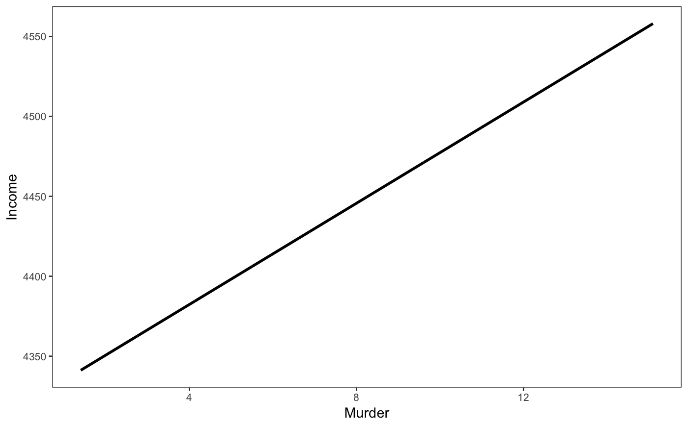
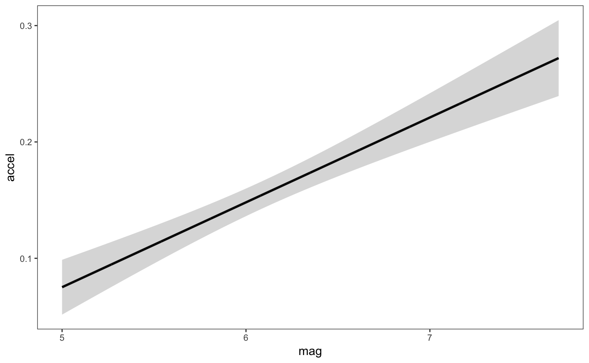
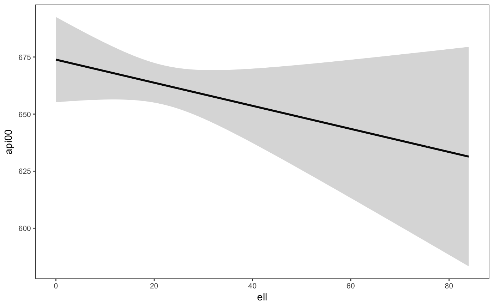

effect_plot() plots regression paths. The plotting is done with
ggplot2 rather than base graphics, which some similar functions use.
effect_plot(model, pred, centered = NULL, scale = FALSE, n.sd = 1, plot.points = FALSE, interval = FALSE, int.type = c("confidence", "prediction"), int.width = 0.95, outcome.scale = "response", set.offset = 1, x.label = NULL, y.label = NULL, pred.labels = NULL, main.title = NULL, color.class = NULL, line.thickness = 1.1, jitter = 0.1, standardize = NULL)
| model | A regression model of type |
|---|---|
| pred | The name of the predictor variable you want on the x-axis. |
| centered | A vector of quoted variable names that are to be
mean-centered.
If |
| scale | Logical. Would you like to standardize the variables
that are centered? Default is |
| n.sd | How many standard deviations should be used if |
| plot.points | Logical. If |
| interval | Logical. If |
| int.type | Type of interval to plot. Options are "confidence" or "prediction". Default is confidence interval. |
| int.width | How large should the interval be, relative to the standard error? The default, .95, corresponds to roughly 1.96 standard errors and a .05 alpha level for values outside the range. In other words, for a confidence interval, .95 is analogous to a 95% confidence interval. |
| outcome.scale | For nonlinear models (i.e., GLMs), should the outcome
variable be plotted on the link scale (e.g., log odds for logit models) or
the original scale (e.g., predicted probabilities for logit models)? The
default is |
| set.offset | For models with an offset (e.g., Poisson models), sets a offset for the predicted values. All predicted values will have the same offset. By default, this is set to 1, which makes the predicted values a proportion. |
| x.label | A character object specifying the desired x-axis label.
If |
| y.label | A character object specifying the desired x-axis label.
If |
| pred.labels | A character vector of 2 labels for the predictor if it is
a 2-level factor or a continuous variable with only 2 values. If |
| main.title | A character object that will be used as an overall title for the
plot. If |
| color.class | Any palette argument accepted by
|
| line.thickness | How thick should the plotted lines be? Default is 1.1; ggplot's default is 1. |
| jitter | How much should `plot.points` observed values be "jittered" via [ggplot2::position_jitter()]? When there are many points near each other, jittering moves them a small amount to keep them from totally overlapping. In some cases, though, it can add confusion since it may make points appear to be outside the boundaries of observed values or cause other visual issues. Default is 0.1, but set to 0 if you want no jittering. |
| standardize | Deprecated. Equivalent to `scale`. Please change your scripts to use `scale` instead as this argument will be removed in the future. |
The functions returns a ggplot object, which can be treated
like
a user-created plot and expanded upon as such.
This function provides a means for plotting effects for the
purpose of exploring regression estimates. You must have the
package ggplot2 installed to benefit from these plotting functions.
By default, all numeric predictors other than the one specified in the
pred argument are mean-centered, which usually produces more
intuitive plots. This only affects the y-axis in linear models, but
maybe especially important/influential in non-linear/generalized linear
models.
This function supports nonlinear and generalized linear models and by
default will plot them on
their original scale (outcome.scale = "response").
While mixed effects models from lme4 are supported, only the fixed
effects are plotted. lme4 does not provide confidence intervals,
so they are not supported with this function either.
Note: to use transformed predictors, e.g., log(variable),
put its name in quotes or backticks in the argument.
interact_plot plots interaction effects,
producing plots like this function but with separate lines for different
levels of a moderator.
# Using a fitted lm model states <- as.data.frame(state.x77) states$HSGrad <- states$`HS Grad` fit <- lm(Income ~ HSGrad + Murder, data = states) effect_plot(model = fit, pred = Murder)# Using interval feature fit <- lm(accel ~ mag + dist, data = attenu) effect_plot(fit, pred = mag, interval = TRUE, int.type = "confidence", int.width = .8)# With svyglm library(survey) data(api) dstrat <- svydesign(id = ~1, strata = ~stype, weights = ~pw, data = apistrat, fpc = ~fpc) regmodel <- svyglm(api00 ~ ell + meals, design = dstrat) effect_plot(regmodel, pred = ell, interval = TRUE)# With lme4# NOT RUN { library(lme4) data(VerbAgg) mv <- glmer(r2 ~ Anger + mode + (1 | item), data = VerbAgg, family = binomial, control = glmerControl("bobyqa")) effect_plot(mv, pred = Anger) # }